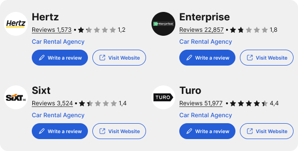
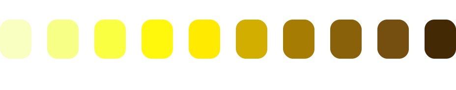
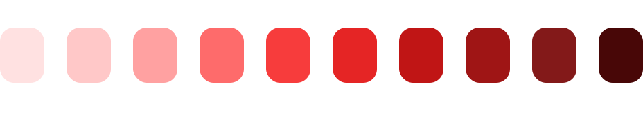
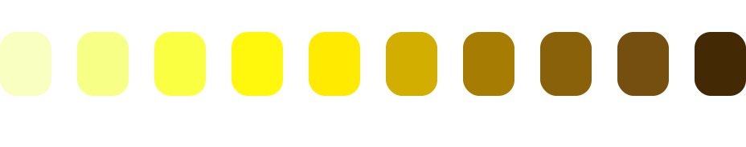
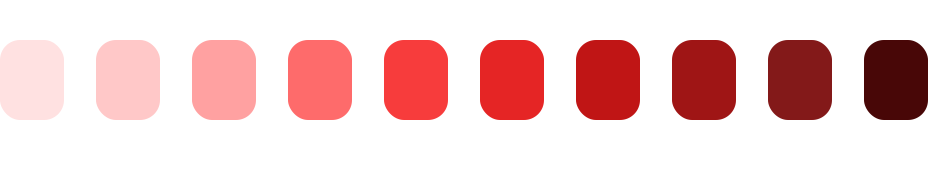
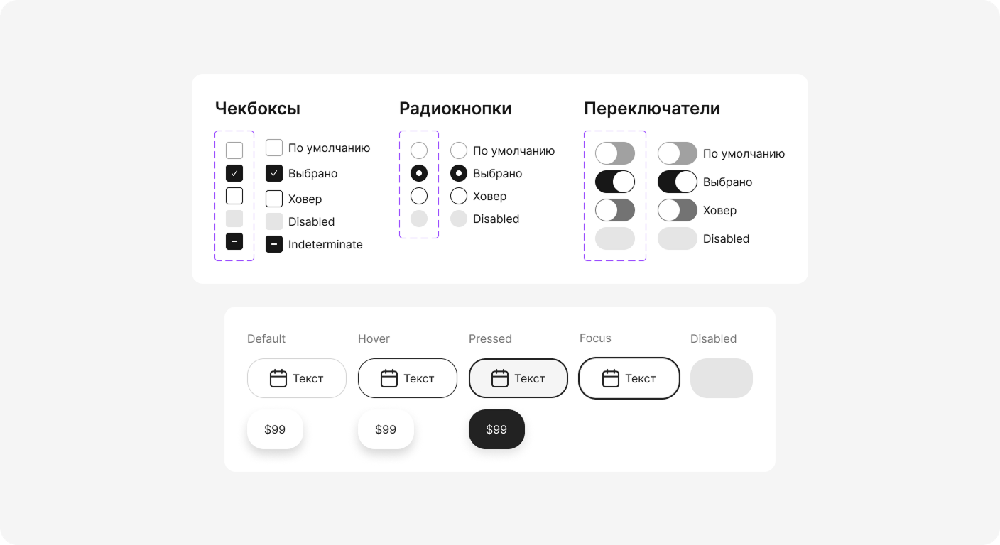
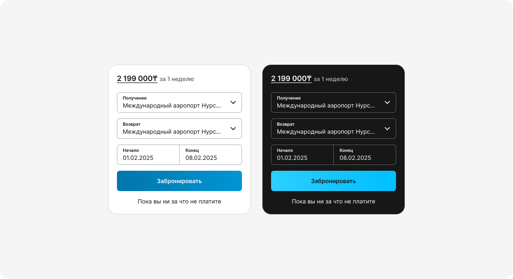
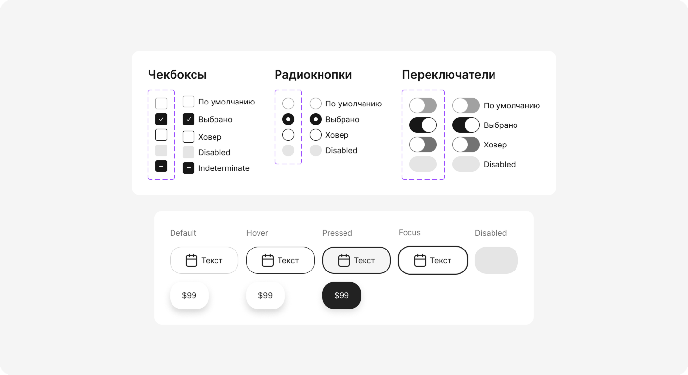
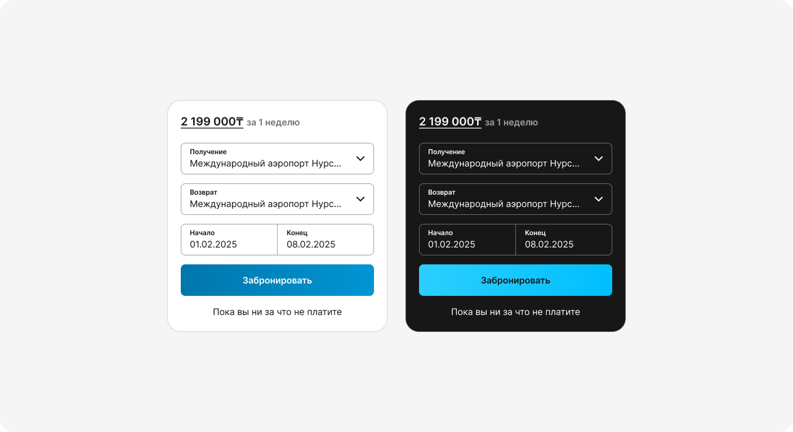

1.Обзор дизайна конкурентов

Перед тем, как приступать к разработке дизайна нашего продукта стоит проанализировать конкурентов. По методике UX Expert Review (Nielsen Norman Group) — формату “design review”, когда один специалист инспектирует интерфейс и отмечает потенциальные проблемы без участия реальных пользователей, — я прошёл свежим взглядом через веб- и мобильные версии ключевых конкурентов (Turo, Getaround, Hertz, Avis, Enterprise).
Как проходил обзор:
- 10 эвристик Джейкоба Нильсена — базовый чек-лист; по каждой фиксировал как положительные находки, так и нарушения
- Heuristic Scoring Sheet: поставил балл 0-3 каждой эвристике, чтобы сравнивать сервисы «яблоко к яблоку».
- Экспертная критика: для каждого экранного потока («поиск → карта → карточка авто → бронирование → оплатa») записал комментарии с-тремя тегами — Problem / Opportunity / Delight.
- Скрин-архив: сделал серии скриншотов и короткие записи, чтобы команда могла быстро увидеть контекст без установки приложений.
2. Анализ отзывов

На платформах оказалось более 85 515 отзывов. С помощью встроенных фильтров я отобрал наиболее полезные, свежие и получившие наибольшее число лайков записи, после чего выделил ключевые точки боли пользователей и сформулировал выводы. Затем я поручил самой мощной и продвинутой модели gpt проанализировать весь массив отзывов; полученные инсайты полностью подтвердили мои наблюдения.
3. Пользовательское тестирование конкурентов

Поиск респондентов
Сначала я сформулировал критерии отбора респондентов.
- Профиль: водители, регулярно арендующие автомобили, и владельцы, сдающие личное авто на Turo и Getaround.
- Возраст: 23–45 лет.
- Водительский стаж: более 2 лет.
- Геолокация: RU (CIS) / EN (US & EU).
10 русскоязычных участников я искал через собственные соцсети, а также на русскоязычных фриланс-биржах и job-площадках. Вознаграждение составляло 5 000 ₽ / 124 BYN / 20 000 ₸.10 англоязычных респондентов привлекал объявлениями на Upwork, Reddit и Facebook, указывая от 100 $
Тестирование

Сайты/приложения для сравнения

Сессия
Пользовательское тестирование по гайд-лайнам NN Group.
Формат сессии
1. 5-Second Test показываю главную ровно 5 секунд, затем спрашиваю:
«Что это за сервис? Что вы можете сделать дальше?» Этот приём фиксирует первое впечатление до того, как участник начнёт «разглядывать детали».
2. Сценарные задания из целей пользователя:
- Водитель: «Представьте, что вам нужен автомобиль на выходные в Барселоне. Забронируйте машину, увидев финальную цену сразу.»
- Хост: «Вы решили сдавать своё авто. Опубликуйте объявление так, чтобы его смогли забронировать сегодня же.»
- «Попробуйте отследить статистику вашей машины»
Задания сформулированы как реальные истории и не подсказывают конкретные клики, по методике NN Group «Turn User Goals into Task Scenarios».
3. Метрики «на лету»
- Success Rate (успешно/неуспешно) и Time-on-Task — самые простые, но показательные показатели.
- Фиксирую критические ошибки и комментарии «think-aloud» в OBS-Studio.
4. Post-task debrief — один вопрос NN Group “Какой этап был самым сложным?” + быстрая шкала удовлетворённости (1-7).
Организация
- 5 респондентов на язык (RU + EN) в каждом цикле — правило «тестируй на пятёрках»: этого достаточно, чтобы вскрыть 80 % проблем, прежде чем макеты «отполированы».
- Сессии проходят удалённо; команда наблюдает, чтобы инсайты не терялись.
- После каждого участника — 10-мин «дефект-рада»: отмечаем найденные проблемы, оцениваем Severity и кладём в action-лист.
Почему так
Методика NN Group балансирует скорость и глубину: короткие итерации по 5 человек позволяют быстро проверять гипотезы, а сценарные задания дают данные не только о «кнопках», но и о восприятии цены, доверия и скорости бронирования.
После сессий
1. Вечерний синтез
- Пересматриваю записи OBS-Studio на 1,5× скорости, ставлю тайм-коды там, где замечаю новые проблемы или подтверждение гипотез.
- Сверяю всё с полевыми заметками, которые вел во время сессий.
- Сводная таблица: для каждой проблемы отмечаю частоту (сколько раз встречалась) и серьёзность (Severity 1-3).
2. Action-list
- Быстрые правки (Severity 1, high-frequency) попадают в спринт до следующего раунда тестов.
- Остальное уходит в продуктовый бэклог с пометкой «наблюдать».
3. Благодарности и выплаты
- В тот же вечер рассылаю письма благодарности с кратким фидбеком «что особенно помогло».
- Перечисляю вознаграждение всем десяти участникам через выбранные ими каналы ($ / ₽ / BYN / ₸).


 




 


